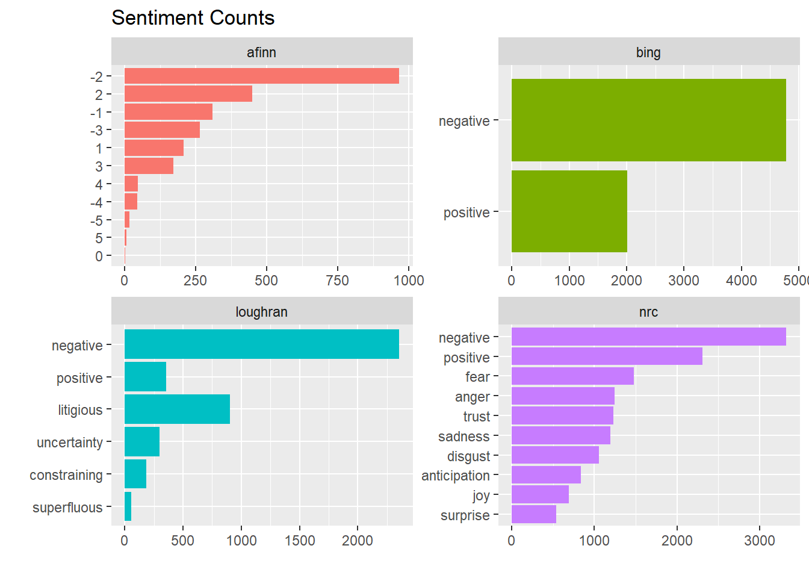

A typical sentiment analysis involves unnesting tokens with unnest_tokens(), assigning sentiments with inner_join(sentiments), counting tokens with count(), and summarizing and visualizing.
The tidytext package contains four sentiment lexicons, all based on unigrams.
You can view the sentiment assignments with get_sentiments(lexicon = c("afinn", "bing", nrc", "laughlin"))
x1 <- get_sentiments(lexicon = "nrc") %>%
count(sentiment) %>%
mutate(lexicon = "nrc")
x2 <- get_sentiments(lexicon = "bing") %>%
count(sentiment) %>%
mutate(lexicon = "bing")
x3 <- get_sentiments(lexicon = "afinn") %>%
count(value) %>%
mutate(lexicon = "afinn") %>%
mutate(sentiment = as.character(value)) %>%
select(-value)
x4 <- get_sentiments(lexicon = "loughran") %>%
count(sentiment) %>%
mutate(lexicon = "loughran")
x <- bind_rows(x1, x2, x3, x4)
ggplot(x, aes(x = fct_reorder(sentiment, n), y = n, fill = lexicon)) +
geom_col(show.legend = FALSE) +
coord_flip() +
labs(title = "Sentiment Counts", x = "", y = "") +
facet_wrap(~ lexicon, scales = "free")
Here is a sentiment analysis of sections of 80 lines of Jane Austin’s books. (Small sections may not have enough words to get a good estimate of sentiment, and large sections can wash out the narrative structure. 80 lines seems about right.)
# austin_tidy %>%
# inner_join(get_sentiments("bing")) %>%
# count(book, index = linenumber %/% 80, sentiment) %>%
# pivot_wider(names_from = sentiment, values_from = n, values_fill = list(n = 0)) %>%
# mutate(sentiment = positive - negative) %>%
# ggplot(aes(x = index, y = sentiment, fill = book)) +
# geom_col(show.legend = FALSE) +
# facet_wrap(~book, ncol = 2, scales = "free_x")Fair to say Jane Austin novels tend to have a happy ending? The three sentiment lexicons provide different views of THE data. Here is a comparison of the lexicons using one of Jane Austin’s novels, “Pride and Prejudice”.
# # AFINN lexicon measures sentiment with a numeric score between -5 and 5.
# afinn <- austin_tidy %>%
# filter(book == "Pride & Prejudice") %>%
# inner_join(get_sentiments("afinn"), by = "word") %>%
# group_by(index = linenumber %/% 80) %>%
# summarise(sentiment = sum(value)) %>%
# mutate(method = "AFINN")
#
# # Bing and nrc categorize words in a binary fashion, either positive or negative.
# bing <- austin_tidy %>%
# filter(book == "Pride & Prejudice") %>%
# inner_join(get_sentiments("bing"), by = "word") %>%
# count(index = linenumber %/% 80, sentiment) %>%
# pivot_wider(names_from = sentiment, values_from = n, values_fill = list(n = 0)) %>%
# mutate(sentiment = positive - negative) %>%
# mutate(method = "Bing") %>%
# select(index, sentiment, method)
#
# nrc <- austin_tidy %>%
# filter(book == "Pride & Prejudice") %>%
# inner_join(get_sentiments("nrc") %>% filter(sentiment %in% c("positive", "negative")), by = "word") %>%
# count(index = linenumber %/% 80, sentiment) %>%
# pivot_wider(names_from = sentiment, values_from = n, values_fill = list(n = 0)) %>%
# mutate(sentiment = positive - negative) %>%
# mutate(method = "NRC") %>%
# select(index, sentiment, method)
#
# bind_rows(afinn, bing, nrc) %>%
# ggplot(aes(index, sentiment, fill = method)) +
# geom_col(show.legend = FALSE) +
# facet_wrap(~method, ncol = 1, scales = "free_y")In this example, and in general, NRC sentiment tends to be high, AFINN sentiment has more variance, and Bing sentiment finds longer stretches of similar text. However, all three agree roughly on the overall trends in the sentiment through a narrative arc.
What are the top-10 positive and negative words? Using the Bing lexicon, get the counts, then group_by(sentiment) and top_n() to the top 10 in each category.
# austin_tidy %>%
# filter(book == "Pride & Prejudice") %>%
# inner_join(get_sentiments("bing"), by = "word") %>%
# count(word, sentiment, sort = TRUE) %>%
# group_by(sentiment) %>%
# top_n(n = 10, wt = n) %>%
# ggplot(aes(x = fct_reorder(word, n), y = n, fill = sentiment)) +
# geom_col(show.legend = FALSE) +
# facet_wrap(~sentiment, scales = "free_y") +
# coord_flip() +
# labs(y = "Contribution to Sentiment",
# x = "")Uh oh, “miss” is a red-herring - in Jane Austin novels it often refers to an unmarried woman. Drop it from the analysis by appending it to the stop-words list.
# austin_tidy %>%
# anti_join(bind_rows(stop_words,
# tibble(word = c("miss"), lexicon = c("custom")))) %>%
# filter(book == "Pride & Prejudice") %>%
# inner_join(get_sentiments("bing")) %>%
# count(word, sentiment, sort = TRUE) %>%
# group_by(sentiment) %>%
# top_n(n = 10, wt = n) %>%
# ggplot(aes(x = fct_reorder(word, n), y = n, fill = sentiment)) +
# geom_col(show.legend = FALSE) +
# facet_wrap(~sentiment, scales = "free_y") +
# coord_flip() +
# labs(y = "Contribution to Sentiment",
# x = "")Better!
A common way to visualize sentiments is with a word cloud.
# austin_tidy %>%
# anti_join(bind_rows(stop_words,
# tibble(word = c("miss"), lexicon = c("custom")))) %>%
# filter(book == "Pride & Prejudice") %>%
# count(word) %>%
# with(wordcloud(word, n, max.words = 100))comparison.cloud is another implementation of a word cloud. It takes a matrix input.
# x <- austin_tidy %>%
# anti_join(bind_rows(stop_words,
# tibble(word = c("miss"), lexicon = c("custom")))) %>%
# inner_join(get_sentiments("bing")) %>%
# filter(book == "Pride & Prejudice") %>%
# count(word, sentiment, sort = TRUE) %>%
# pivot_wider(names_from = sentiment, values_from = n, values_fill = list(n = 0)) %>%
# as.data.frame()
# rownames(x) <- x[,1]
# comparison.cloud(x[, 2:3])
# rm(x)Sometimes it makes more sense to analyze entire sentences. Specify unnest_tokens(..., token = "sentences") to override the default token = "word".
# austen_books() %>%
# group_by(book) %>%
# mutate(linenumber = row_number(),
# chapter = cumsum(str_detect(text, regex("^chapter [\\divxlc]",
# ignore_case = TRUE)))) %>%
# ungroup() %>%
# unnest_tokens(output = word, input = text, token = "sentences")Create n-grams by specifying unnest_tokens(..., token = "ngrams", n) where n = 2 is a bigram, etc. To remove the stop words, separate the n-grams, then filter on the stop_words data set.
# austin.2gram <- austen_books() %>%
# group_by(book) %>%
# mutate(linenumber = row_number(),
# chapter = cumsum(str_detect(text, regex("^chapter [\\divxlc]",
# ignore_case = TRUE)))) %>%
# ungroup() %>%
# unnest_tokens(output = bigram, input = text, token = "ngrams", n = 2)
#
# austin.2gram <- austin.2gram %>%
# separate(bigram, c("word1", "word2"), sep = " ") %>%
# filter(!word1 %in% stop_words$word &
# !word2 %in% stop_words$word &
# !is.na(word1) & !is.na(word2)) %>%
# unite(bigram, word1, word2, sep = " ")
#
# austin.2gram %>%
# count(book, bigram, sort = TRUE)Here are the most commonly mentioned streets in Austin’s novels.
# austin.2gram %>%
# separate(bigram, c("word1", "word2"), sep = " ") %>%
# filter(word2 == "street") %>%
# count(book, word1, sort = TRUE)Use the TF-IDF statistic to compare words among documents. Calculate the cosine similarity, the angle in multidimensional space between two vectors (\(cos(\theta) = (A \cdot B) / ||A||||B||)\)), to determine how similar two items are. Use widyr::pairwise_similarity() to calculate the cosine similarity of all pairs of items in a tidy table.
# austen %>%
# unnest_tokens(output = "word", input = "text", token = "words") %>%
# anti_join(stop_words, by = "word") %>%
# count(book, word) %>%
# bind_tf_idf(term = word, document = book, n = n) %>%
# pairwise_similarity(item = book, feature = word, value = tf_idf) %>%
# arrange(desc(similarity))# austen_books() %>%
# group_by(book) %>%
# mutate(linenumber = row_number(),
# chapter = cumsum(str_detect(text, regex("^chapter [\\divxlc]",
# ignore_case = TRUE)))) %>%
# ungroup() %>%
# unnest_tokens(output = bigram, input = text, token = "ngrams", n = 2) %>%
# separate(bigram, c("word1", "word2"), sep = " ") %>%
# filter(!word1 %in% stop_words$word &
# !word2 %in% stop_words$word &
# !is.na(word1) & !is.na(word2)) %>%
# unite(bigram, word1, word2, sep = " ")
# austin.2gram %>%
# count(book, bigram) %>%
# bind_tf_idf(bigram, book, n) %>%
# group_by(book) %>%
# top_n(n = 10, wt = tf_idf) %>%
# ggplot(aes(x = fct_reorder(bigram, n), y = tf_idf, fill = book)) +
# geom_col(show.legend = FALSE) +
# facet_wrap(~book, scales = "free_y", ncol = 2) +
# labs(y = "tf-idf of bigram to novel") +
# coord_flip() A good way to visualize bigrams is with a network graph. Packages igraph and ggraph provides tools for this purpose.
# set.seed(2016)
#
# austen_books() %>%
# group_by(book) %>%
# mutate(linenumber = row_number(),
# chapter = cumsum(str_detect(text, regex("^chapter [\\divxlc]",
# ignore_case = TRUE)))) %>%
# ungroup() %>%
# unnest_tokens(output = bigram, input = text, token = "ngrams", n = 2) %>%
# separate(bigram, c("word1", "word2"), sep = " ") %>%
# filter(!word1 %in% stop_words$word &
# !word2 %in% stop_words$word &
# !is.na(word1) & !is.na(word2)) %>%
# count(word1, word2) %>%
# filter(n > 20) %>%
# graph_from_data_frame() %>% # creates unformatted "graph"
# ggraph(layout = "fr") +
# geom_edge_link(aes(edge_alpha = n),
# show.legend = FALSE,
# arrow = grid::arrow(type = "closed",
# length = unit(.15, "inches")),
# end_cap = circle(.07, 'inches')) +
# geom_node_point(color = "lightblue",
# size = 5) +
# geom_node_text(aes(label = name), vjust = 1, hjust = 1) +
# theme_void()If you want to count the number of times that two words appear within the same document, or to see how correlated they are, widen the data with the widyr package.
# austen_books() %>%
# filter(book == "Pride & Prejudice") %>%
# mutate(section = row_number() %/% 10) %>%
# filter(section > 0) %>%
# unnest_tokens(word, text) %>%
# filter(!word %in% stop_words$word) %>%
# pairwise_count(word, section, sort = TRUE)The correlation among words is how often they appear together relative to how often they appear separately. The phi coefficient is defined
\[\phi = \frac{n_{11}n_{00} - n_{10}n_{01}}{\sqrt{n_{1.}n_{0.}n_{.1}n_{.0}}}\]
where \(n_{10}\) means number of times section has word x, but not word y, and \(n_{1.}\) means total times section has word x. This lets us pick particular interesting words and find the other words most associated with them.
# austen_books() %>%
# filter(book == "Pride & Prejudice") %>%
# mutate(section = row_number() %/% 10) %>%
# filter(section > 0) %>%
# unnest_tokens(word, text) %>%
# filter(!word %in% stop_words$word) %>%
# pairwise_cor(word, section, sort = TRUE) %>%
# filter(item1 %in% c("elizabeth", "pounds", "married", "pride")) %>%
# group_by(item1) %>%
# top_n(n = 4) %>%
# ungroup() %>%
# mutate(item2 = reorder(item2, correlation)) %>%
# ggplot(aes(x = item2, y = correlation)) +
# geom_bar(stat = "identity") +
# facet_wrap(~ item1, scales = "free") +
# coord_flip()You can use the correlation to set a threshold for a graph.
One of the most common objects in text mining packages is the document term matrix (DTM) where each row is a document, each column a term, and each value an appearance count. The broom package contains functions to convert between DTM and tidy formats.
Convert a DTM object into a tidy data frame with tidy(). Convert a tidy object into a sparse matrix with cast_sparse(), into a DTM with cast_dtm(), and into a “dfm” for quanteda with cast_dfm().
Create a tidy version of AssociatedPress with tidy().
The document-feature matrix dfm class from the quanteda text-mining package is another implementation of a document-term matrix. Here are the terms most specific (highest tf-idf) from each of four selected inaugural addresses.
And here is word frequency trend ocer time for six selected terms. (problem with extract() below).
Cast tidy data into document-term matrix with cast_dtm(), quanteda’s dfm with cast_dfm(), and sparese matrix with cast_sparse().
An untokenized document collection is called a corpus. The corpuse may include metadata, such as ID, date/time, title, language, etc. Corpus metadata is usually stored as lists. Use tidy() to construct a table, one row per document.
Library tm.plugin.webmining connects to online feeds to retrieve news articles based on a keyword.